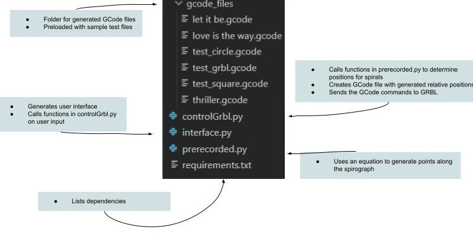
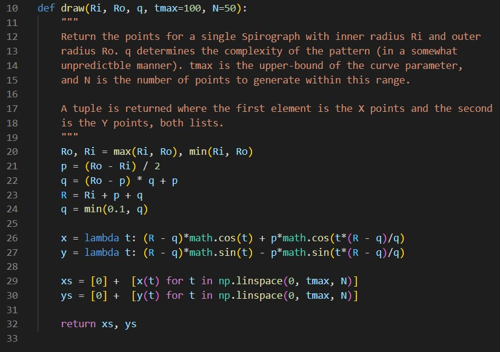
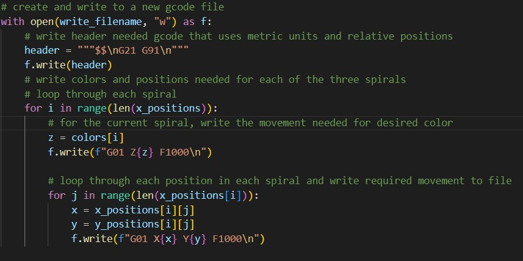
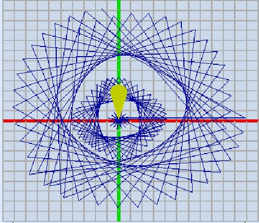

Software
An overview of our software system.
Code Structure
Software Flow
Interface → spotify search API → interface → spotify analysis API → spirograph → GCode generator → GRBL interface
External Software Dependencies
- pyserial: used for serial communication with the arduino and CNC motorshield.
- spotipy: python library for the Spotify Web API used to search the name of the song that the user enters and to determine the audio features of the chosen song.
- ttkthemes: used to style the graphical user interface with a predefined theme.
Code Structure
The code for this project is split into the following three files:
Interface
In order to incorporate user interaction with the system, we chose to use Tkinter and Python to create a simple graphical user interface. We decided that a Tkinter window was a sufficient interface for our goal of allowing the user to choose the song they wanted to visualize as the user only needs to enter a song and then choose an option from a dropdown. Additionally, we decided to use the package `ttkthemes` in order to style the simple Tkinter window.
When the window is open, the user is able to type into a text box the name of the song they wish to visualize. After entering the name of the song, the user is able to click a button that uses the spotify search API to populate a dropdown with the top 5 songs with similar names from spotify. After selecting the correct song from the dropdown, the user is able to click the “Done” button, which then triggers the visualization of the song. After clicking the aforementioned button, the audio features of the song are obtained from the spotify analysis API and this data is sent to the controlling GRBL file to generate a GCode file for movement of the gantry.

Spotify API
Our initial approach was to use a Fourier transform to analyze music. However, this presented two issues. Firstly, the information from a Fourier transform doesn’t exactly translate 1:1 with the note and pitch information about the song because the Fourier transform also captures things like the harmonics of the note played as well as rhythmic information. Secondly, the information from the transform is also generally “surface-level”; it is only a secondary representation of raw audio data, and it’s not particularly artistic.
Through our design reviews, we learned about a Spotify API that does a far more complex musical analysis and tells things about a song such as how danceable it is or what the general emotional mood is (on a sad to happy continuum). However, in order to use this API to analyze a given song, we would have to provide the song’s Spotify ID. Actually obtaining this ID from a user-perspective isn’t super-straightforward; sometimes, the ID appears in the Spotify URL for a song, but most people use Spotify on their phone or as a desktop app. However, Spotify itself also provides a very easy solution to this: they have another API for searching for a song by either its title or its artist. Each song returned from this API given a keyword search is paired with its ID, and then the ID of the correct song (which the user chooses from the list) is sent right back to Spotify for analysis.
In the end, integrating the Spotify API not only solved the problem of doing more complicated and artistic musical analysis, but it also provided the scaffolding for creating user interaction through its song-search API. The alternative route, staying with the Fourier transform, would’ve been far more complicated: we would have had to use one API to find the ID of, say, a YouTube video, and then another API to download the audio data from that YouTube ID, and it would’ve all been for less gain than just simply using Spotify.
In the above image, the Spotify API is used to obtain values for the audio features of the song.
Spirograph
We determined early-on that we wanted to create some sort of parametric art, the parameters of which would be determined by music. In exploring different kinds of parametric art, some course assistants pointed us in the direction of Spirographs. The Spirograph is a toy that gears of varying size to draw spiral patterns on a piece of paper. Luckily for us, we found that the Wikipedia page for the Spirograph provided parametric equations for computationally “drawing” Spirograph spirals. We spent some time playing with these equations, becoming familiar with how the different variables affect the final design. We were interested in our design being several concentric circular rings/bands, where each ring would be a spirograph. For this, we had to figure out a way to constrain the variables in the parametric equation to produce a spiral of a given inner and outer radius.
After determining how to constrain the variables, we discovered that there was some sort of periodicity to our parameters; at certain values, the design would look “clean.” We realized that some designs seemed to be infinitely complex, and that if you drew them long enough, you would just draw a completely filled-in circle. In the interest of making sure that our final designs were both neat and also drawable in a reasonable amount of time, we spent some time trying to determine what values would produce these clean spirals. And while we did figure out a further constraint on the parametric equation variables that would always produce clean spirals, we unfortunately realized that there were a very small number of clean designs. So in the end, we decided to introduce new variables to our Spirograph generator: the range of the parametric variable, and the step-size of the parametric variable. We decided to draw each of the concentric spirals with a fixed range and step to help ensure that drawing any spiral wouldn’t take too long. Increasing the range increases the complexity of the drawing, but going too far makes the drawing look messy (especially if the parameters chosen didn’t produce a clean spiral). Decreasing the step-size increases the resolution of the drawing because curves actually look like curves instead of jagged lines, but this also greatly increases the drawing time. Besides those two variables, the last three are: inner and outer radius, and a parameter that helps control the complexity in the spiral, but due to the nature of the Spirograph, each variable contributes some amount to the complexity.
A final problem we had was in determining scaling. In the code, the function that generates the points on the spiral can return those points within any arbitrary range because, depending on the calibration of the gantry motors, a given number can translate to any real-world distance. To handle this uncertainty, we normalized the points returned from spiral code to be in the range [-1,1], calibrated the motors so that one step was one centimeter, and then simply scaled all the points from the spiral code by a fixed scalar depending on how big we wanted the spirals to go. This was much more manageable than modifying the spiral code each time we needed to adjust the spiral size. All of the code related to the spirographs is located in our `prerecorded.py` file found in our source code.
The above code uses the spirograph equations defined in lines 26 and 27 to generate the points of the spirograph.
GRBL
Initially, we used an Adafruit Motor Shield to control the stepper motors. This design choice meant that we could not have the motors move synchronously. Consequently, we had to determine the slope of the line we had to draw and then use proportions to determine how large of a step each motor had to take at each time step in the movement from one position to another. This resulted in a “staircase-like” design, as opposed to the smooth curves for which we were aiming.
While we considered looking into Arduino libraries for multithreaded control for synchronous movement, we ultimately decided to switch to using a CNC Motor Shield alongside GRBL, which simplified the process of simultaneous movement of motors.
After flashing the GRBL onto the motor shield, all we had to worry about was generating GCode files that defined the appropriate movement of the motors. Ultimately, we decided to use the relative positioning command to send the change in position that was required. All of the code related to GRBL control is located in our `controlGRBL.py` file found in our source code.
The above code writes to a GCode file that will be sent to GRBL.
Logistics
Although the final product required multidisciplinary integration, we found it important to have individual macro-components (i.e. hardware, electrical and software) and micro-components (e.g. different parts of software) working in isolation before moving towards integration. For example, while the gantry was being built, the software team needed to be programming the gantry, but there was nothing built yet. And even when the gantry was working, testing software required interrupting the mechanical team. In order to get around this, we discovered a piece of software called the Universal GCode Sender. We used this tool primarily for debugging the CNC shield and calibrating motors. But we also discovered a sort-of simulation tool that allowed us to see how the gantry would draw our designs. This allowed us to test out changes in software without commandeering the gantry, and also importantly allowed for very quick iteration; if something was wrong with the design, we would know in a matter of seconds, rather than having to wait for the gantry to finish drawing.
In general, we found using external software tools to be very helpful in this fast-prototyping. For example, when exploring parametric designs, we leveraged tools such as MATLAB and the Desmos graphing calculator to not only visualize different designs we discovered, but also to get hands-on and explore how each parameter would affect the design. Overall, the software was all done in a very modular approach. Each code file was made to have its own purpose: one file would run the interface, one file would create the spirals, one file would generate the GCode, etc. Using this approach, we would make sure that each component was fully functional within the software system. As components were completed, they were integrated into one another (often by simply importing the other code files, since we were using Python). In the end, we were left with a nicely-bundled software system that was ready to be integrated with the electrical and mechanical parts.
The above image is of the spirographs generated when GCode files were tested in Universal GCode Sender.